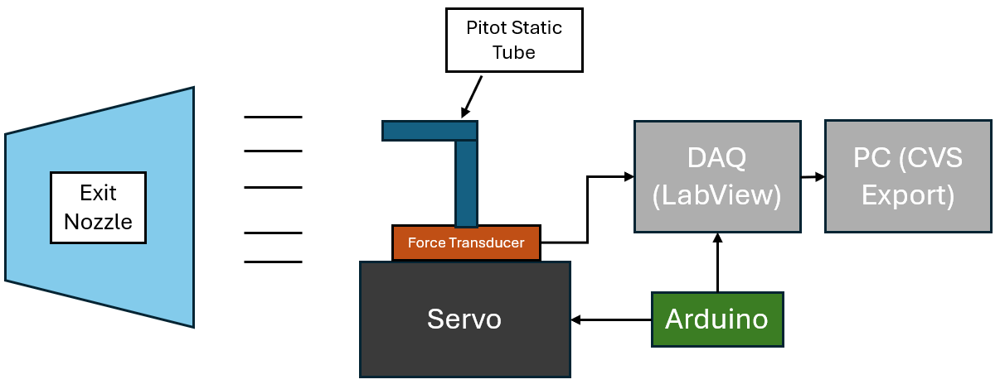

GT Supersonics Simulations Lead
Project Overview & Goal
The primary goal was to capture exit flow velocities at various nozzle angles to analyze engine performance. The main challenge was that the existing manual data collection method was error-prone, not repeatable, and costly.
Solution & Technical Details
An automated data acquisition and validation system was developed to solve this problem. The solution involved several key components:
Simulation & Modeling:
- Modeled preliminary motors using Python and the Numerical Propulsion System Simulation (NPSS) to predict key propulsion parameters.
Automated Data Acquisition:
- Designed and implemented a LabView system that controlled a custom-built rotating pressure sensor rig.
- This new rig fully automated the angular sampling process, removing manual error.

Testing Setup
Validation:
- Integrated the simulation results with the newly acquired experimental data to validate the complete system's behavior and ensure accuracy.
Impact
The new automated system successfully delivered consistent, high-resolution velocity data. This provided a reliable dataset and significantly improved the team's confidence in its engine performance predictions.